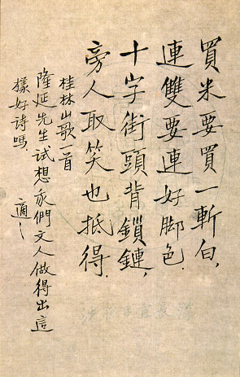

義助慰安婦 —— 李敖百件珍藏義賣藝術品（第92件） 品 名： I5. 胡適寫山歌 預估價： 50 萬 成交價： （保留） 說 明： 一九四四年胡適在美國寫給張隆廷先生的毛筆字。張隆廷先生是一位有名的書法家，專寫宋朝黃庭堅的字，在台曾做過教育部國際文教處處長，退休後定居在美國，張先生離台前，對李敖引宋人詞：「此度見花枝，白頭誓不歸。」，然後飄然而去。 
一九四四年胡適在美國寫給張隆廷先生的毛筆字。張隆廷先生是一位有名的書法家，專寫宋朝黃庭堅的字，在台曾做過教育部國際文教處處長，退休後定居在美國，張先生離台前，對李敖引宋人詞：「此度見花枝，白頭誓不歸。」，然後飄然而去。